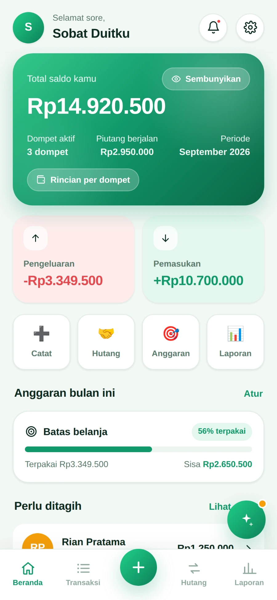
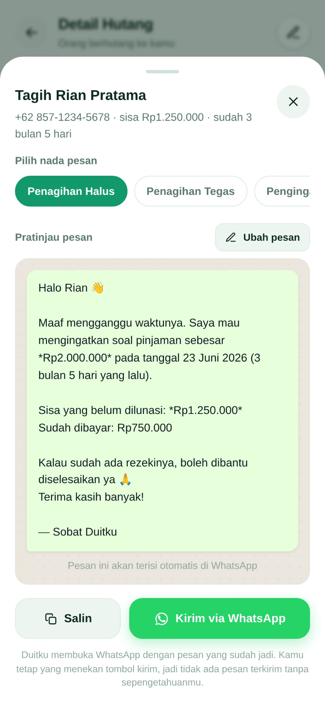
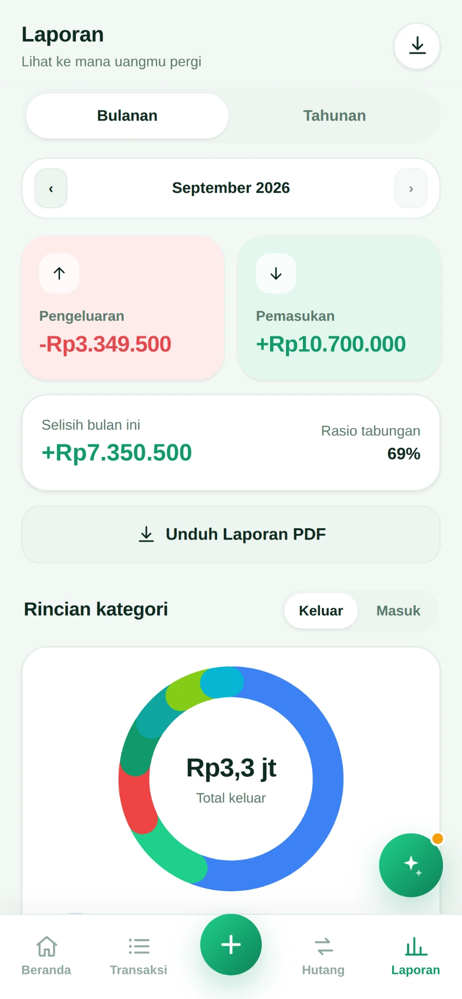
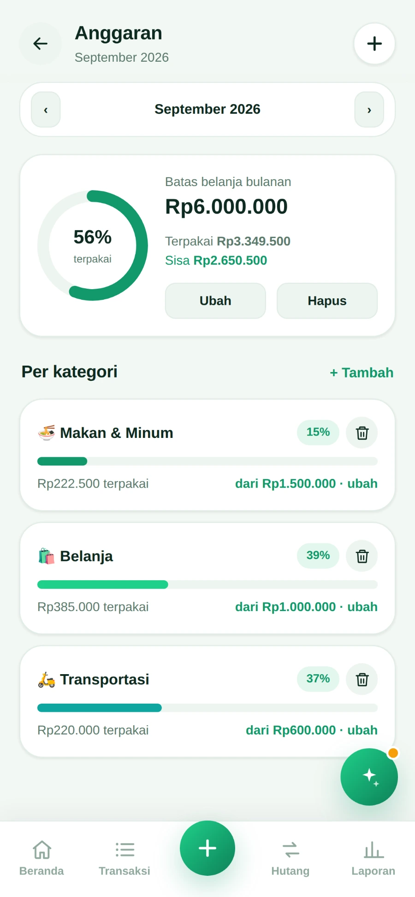
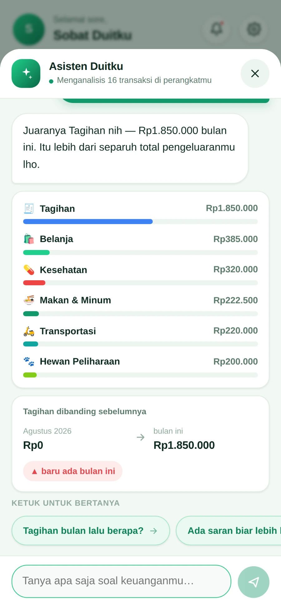

01
Catatan berhenti di minggu kedua
Aplikasi keuangan lain minta daftar akun dan punya belasan menu sebelum kamu sempat mencatat satu pengeluaran.
Pencatat keuangan & hutang
Aplikasi keuangan pribadi yang sekaligus menyiapkan pesan penagihan hutangmu di WhatsApp — tinggal kamu kirim.

Kenapa ini dibuat
Aplikasi keuangan lain minta daftar akun dan punya belasan menu sebelum kamu sempat mencatat satu pengeluaran.
Hutang dicatat di Notes, di chat yang ketimbun, atau cuma diingat. Pas mau ditagih, angkanya sendiri sudah tidak yakin.
Mengetik ulang pesannya dari nol tiap kali, memikirkan nada yang pas biar tidak menyinggung, ujungnya ditunda sampai lupa.
Fungsi utamanya

Kegunaan sehari-hari
Pemasukan dan pengeluaranmu tercatat rapi, anggaran terpantau, dan angkanya bisa kamu tanyakan langsung.



Dan yang paling penting
Catatan hutang memuat nama dan nomor WhatsApp orang lain. Karena itu Duitku sengaja dibuat tanpa server sama sekali.